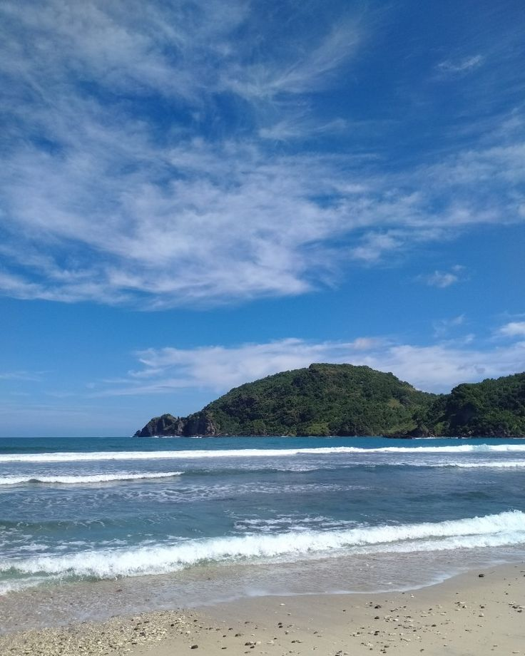

1. Puncak Bogor

Puncak Bogor adalah daerah pegunungan wisata yang menawarkan udara sejuk, pemandangan alam hijau, kebun teh, dan berbagai aktivitas rekreasi.
2. Pantai Selatan

Pantai Selatan adalah wilayah pesisir yang menghadap Samudra Hindia dan dikenal memiliki ombak besar yang menantang serta pemandangan alam yang memukau seperti pasir hitam, tebing tinggi, dan pemandangan matahari terbenam.
3. Goa Jepang

Goa Jepang adalah situs bersejarah peninggalan tentara Jepang pada masa Perang Dunia II, yang berfungsi sebagai tempat berlindung, penyimpanan senjata, amunisi, dan logistik militer.
|
Info Menarik
- Danau Toba: Danau vulkanik terbesar di dunia dan lokasi letusan supervulkanik terbesar dalam 25 juta tahun terakhir.
- Candi Borobudur: Situs Buddha terbesar di dunia dan satu dari tujuh keajaiban dunia, yang merupakan warisan budaya dunia yang diakui UNESCO.
- Memiliki garis pantai terpanjang kedua di dunia.
Rekomendasi Wisata Lain
- Blok M, Jakarta Selatan
- Kawah Putih, Bandung
- Malioboro, Yogyakarta
|